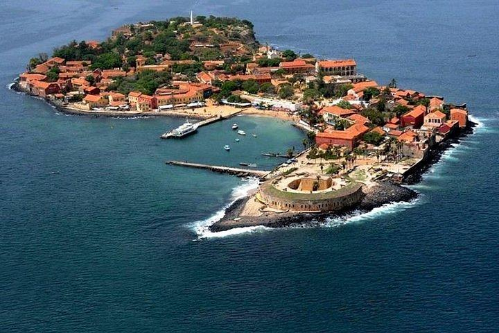
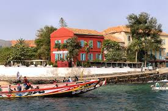
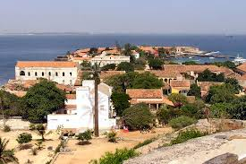

L’Île de Gorée est située au large de Dakar, au Sénégal. Elle est célèbre pour son histoire liée à la traite des esclaves et la Maison des Esclaves, un site de mémoire important. L’île possède également des plages magnifiques et des bâtiments colorés typiques de l’architecture coloniale.